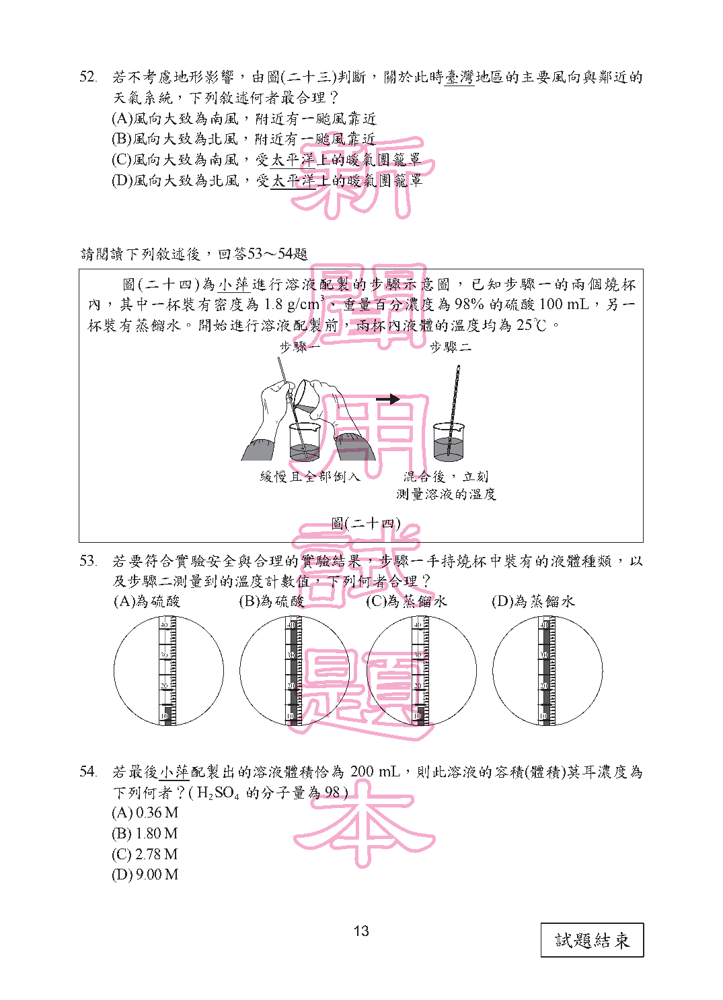

第 21 題對應：八上1-1
老師要求同學設計一個有關粉筆在水中浸泡時間與粉筆斷裂難易度關係的實驗，實驗方法為先將粉筆浸泡水中一段時間，再以相同的方法量出折斷粉筆所需要的最小外力。由下列選項的實驗紀錄表，推測何者的實驗設計最符合前述的實驗目的？
此題選項為圖形，請參閱下方官方題本頁面圖片作答。
正解 (A) 此實驗的操作變因應為「浸泡時間」(需設計多組不同的浸泡時間)，應變變因為「折斷所需的最小外力」，其餘條件(粉筆種類、測量方式等)應保持相同(控制變因)。應選出確實只改變浸泡時間、且完整記錄對應折斷外力數據的實驗紀錄表設計。
第 23 題對應：八下1-3
圖(十二)為可樂包裝上的碳足跡標籤，標籤上的數字代表此可樂(包含瓶子)從製造、運輸、使用到回收等過程中，各階段所產生的溫室氣體，經換算後相當於總共排放出280g的二氧化碳。若某運動飲料的碳足跡經換算後為8莫耳的二氧化碳，則此運動飲料的碳足跡標示應為下列何者？(碳和氧的原子量分別為12與16)
此題選項為圖形，請參閱下方官方題本頁面圖片作答。
正解 (D) 二氧化碳分子量＝12＋16×2＝44。8莫耳的二氧化碳質量＝8×44＝352公克。需選出標示數值為352g(或等值換算)的碳足跡標籤圖。
第 31 題對應：九下2-4
下列四種裝置及其處理方式中，哪一種裝置的線圈會發生電磁感應現象？
此題選項為圖形，請參閱下方官方題本頁面圖片作答。
正解 (A) 電磁感應現象發生的條件是「線圈所在位置的磁通量發生變化」，例如磁鐵在線圈中移動、或線圈本身移動使其與磁場的相對位置改變。應選出磁鐵(或磁場)與線圈之間存在相對運動、磁通量確實在變化的裝置。
第 39 題對應：九上7-2
某日天氣晴朗，小閑在阿里山上正準備觀看日出，在清晨日出前，發現此時月亮正好從東方地平線升起，便立即拍照留念。下列何者最有可能是當時拍下的月亮與雲海照片？
此題選項為圖形，請參閱下方官方題本頁面圖片作答。
正解 (D) 清晨日出前月亮才從東方升起，代表此時月亮升起的時間已比太陽晚了大半夜，兩者相位差接近但月亮略晚，此月相應接近「殘月」(眉月)，呈現細窄的月牙形狀。應選出符合此纖細月相、且位於東方地平線附近的照片。
第 53 題對應：八下1-4
圖(二十四)為小萍進行溶液配製的步驟示意圖，已知步驟一的兩個燒杯內，其中一杯裝有密度為1.8g/cm³、重量百分濃度為98%的硫酸100mL，另一杯裝有蒸餾水。開始進行溶液配製前，兩杯內液體的溫度均為25℃。若要符合實驗安全與合理的實驗結果，步驟一手持燒杯中裝有的液體種類，以及步驟二測量到的溫度計數值，下列何者合理？

此題選項為圖形，請參閱下方官方題本頁面圖片作答。
正解 (B) 依實驗安全規範，稀釋濃硫酸時應將「酸緩慢倒入水中」(而非水倒入酸中)，以避免劇烈放熱造成液體飛濺；故步驟一手持並傾倒的燒杯應裝有硫酸。又濃硫酸溶於水為劇烈放熱反應，混合後溫度應明顯高於原本的25℃，故步驟二測得的溫度計讀數應為硫酸、且溫度上升(高於25℃)的組合，選出符合此兩項條件的選項。